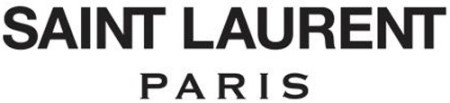

홈 > 브랜드 매거진 > 생 로랑
생 로랑
생 로랑(Yves Saint Laurent)은 1961년 파리에서 설립된 프랑스 럭셔리 패션 하우스이다.
산업 분야 패션·럭셔리 · 공개 등급 편집 검수 · 브랜드 평가 4.6 ★


한눈에 보는 브랜드
생 로랑(Saint Laurent)은 디자이너 이브 생 로랑(Yves Saint Laurent)이 동반자 피에르 베르제와 함께 1961년 파리에서 설립한 프랑스 럭셔리 하우스다. 1966년 여성용 턱시도 '르 스모킹(Le Smoking)'으로 여성복의 경계를 다시 그렸으며, 현재는 케어링(Kering) 그룹 산하에서 안토니 바카렐로 체제로 운영되는 모드의 상징이다.
브랜드 관점
케어링 포트폴리오에서 매출 1위 구찌가 부진한 사이, 생 로랑은 그룹의 두 번째 핵심 축으로 자리 잡았다. 막시멀리즘으로 흔들린 구찌, 미니멀 시크를 내세운 셀린과 달리 생 로랑은 1966년 '르 스모킹'에서 비롯된 날렵한 블랙 테일러링과 록 시크라는 일관된 코드를 유지한다.
안토니 바카렐로는 합류 10년 가까이 이 정체성을 지켜 2025년 리스트 인덱스에서 '가장 뜨거운 브랜드' 1위에 올랐다. 한국에서는 블랙핑크 로제를 의류와 뷰티 글로벌 앰배서더로 기용해 2030 세대 사이에서 영향력을 키우고 있으며, 파리 컬렉션 참석 등으로 화제를 모은다.
시작과 성장
이브 생 로랑은 디올에서 크리스티앙 디올의 후임 수석 디자이너로 이름을 알린 뒤, 1961년 연인이자 사업 파트너 피에르 베르제와 함께 자신의 오트 쿠튀르 하우스를 세웠고 1962년 1월 첫 컬렉션을 발표했다. 1966년에는 여성을 위한 턱시도 '르 스모킹'을 선보여 논란과 찬사를 동시에 받았고, 같은 해 파리 좌안에 기성복 부티크 '리브 고슈(Rive Gauche)'를 열어 럭셔리 기성복 대중화를 이끌었다.
1999년 구찌 그룹(훗날 케어링, 당시 PPR)에 편입되며 톰 포드와 스테파노 필라티를 거쳤고, 2012년 에디 슬리먼이 라인명을 '생 로랑'으로 바꾼 뒤 2016년부터 안토니 바카렐로가 크리에이티브 디렉터를 맡아 하우스를 이끌고 있다.
브랜드 아이덴티티
하우스의 정체성은 여성에게 남성복의 권위를 입혀 해방의 언어로 바꾼 데서 출발한다. 1961년 그래픽 디자이너 카상드르(Cassandre)가 Y·S·L 세 글자를 세로로 엮어 만든 모노그램은 흑백으로 단순화되며 지금까지 하우스의 상징으로 쓰인다.
블랙을 중심으로 한 절제된 팔레트, 날카로운 테일러링, 록 시크 무드가 핵심이며, 도시적이고 자기 확신이 강한 남녀를 타깃으로 한다. 브랜드 보이스는 군더더기 없이 단호하다.
제품과 서비스
대표 핸드백으로는 셰브런 퀼팅과 YSL 로고가 상징인 '루루(Loulou)', 스터드 장식의 '케이트(Kate)'가 있으며, 루루는 약 이백만 원대부터 시작한다. 창업자의 유산인 여성 턱시도 라인과 의류·슈즈, 그리고 로레알이 전개하는 향수·메이크업 등 뷰티가 주요 카테고리다.
직영 부티크와 백화점, 공식 온라인을 통해 유통된다.
현재 상태
모회사는 프랑스 케어링(Kering) 그룹이며 본사는 파리에 있다. 크리에이티브 디렉터는 2016년 합류한 안토니 바카렐로다.
2024년 매출은 전년 대비 9% 줄어든 약 29억 유로로, 그룹 전체 매출 약 172억 유로 가운데 매출 약 77억 유로의 구찌에 이은 핵심 브랜드 위치를 지킨다. 2025년 11월에는 파리 몽테뉴가에 새 플래그십을 열었다.
타임라인
BI/CI 변천사
함께 읽을 브랜드
 패션·럭셔리 · 편집 검수구찌
패션·럭셔리 · 편집 검수구찌 패션·럭셔리 · 매거진 완성스와치
패션·럭셔리 · 매거진 완성스와치스와치는 시계를 고가의 정밀기기에서 매일 바꿔 착용할 수 있는 패션 언어로 전환했다. 시간을 알려주는 기능보다 색, 그래픽, 컬렉션, 가벼운 가격대가 브랜드 경험의...
 패션·럭셔리 · 편집 검수크리스챤 디올
패션·럭셔리 · 편집 검수크리스챤 디올크리스챤 디올(Christian Dior)은 1946년 파리에서 설립된 프랑스 럭셔리 패션 하우스이다.
 패션·럭셔리 · 편집 검수디젤
패션·럭셔리 · 편집 검수디젤디젤(Diesel)은 1978년 렌조 로소가 이탈리아 브레간체에서 설립한 데님 중심의 컨템포러리 패션 브랜드다. 도발적이고 실험적인 디자인으로 데님 헤리티지를 재해석...
 패션·럭셔리 · 편집 검수버버리
패션·럭셔리 · 편집 검수버버리버버리(Burberry)는 1856년 설립된 영국의 럭셔리 패션 하우스이다.
 패션·럭셔리 · 편집 검수샤넬
패션·럭셔리 · 편집 검수샤넬샤넬은 패션을 장식이 아니라 태도와 해방의 언어로 바꾼 브랜드다. 브랜드의 힘은 제품의 고급스러움뿐 아니라 여성의 몸과 생활 방식을 새롭게 해석한 상징성에서 나온다.
 패션·럭셔리 · 편집 검수조르지오 아르마니
패션·럭셔리 · 편집 검수조르지오 아르마니조르지오 아르마니(Giorgio Armani)는 1975년 밀라노에서 설립된 이탈리아 럭셔리 패션 하우스이다.
 패션·럭셔리 · 자료 기반돌체앤가바나
패션·럭셔리 · 자료 기반돌체앤가바나돌체앤가바나(Dolce & Gabbana)는 1985년 도메니코 돌체와 스테파노 가바나가 설립한 이탈리아 럭셔리 패션 하우스이다.